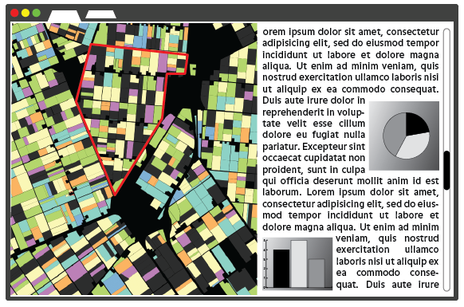
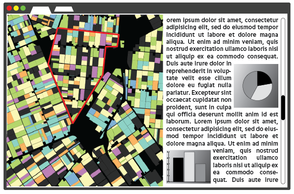
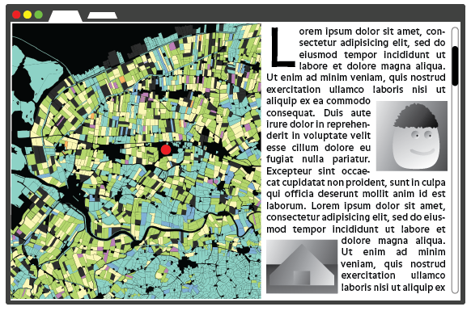
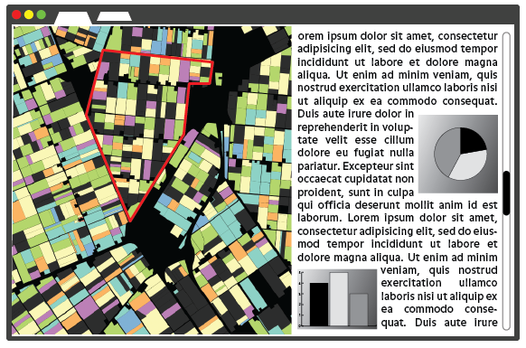
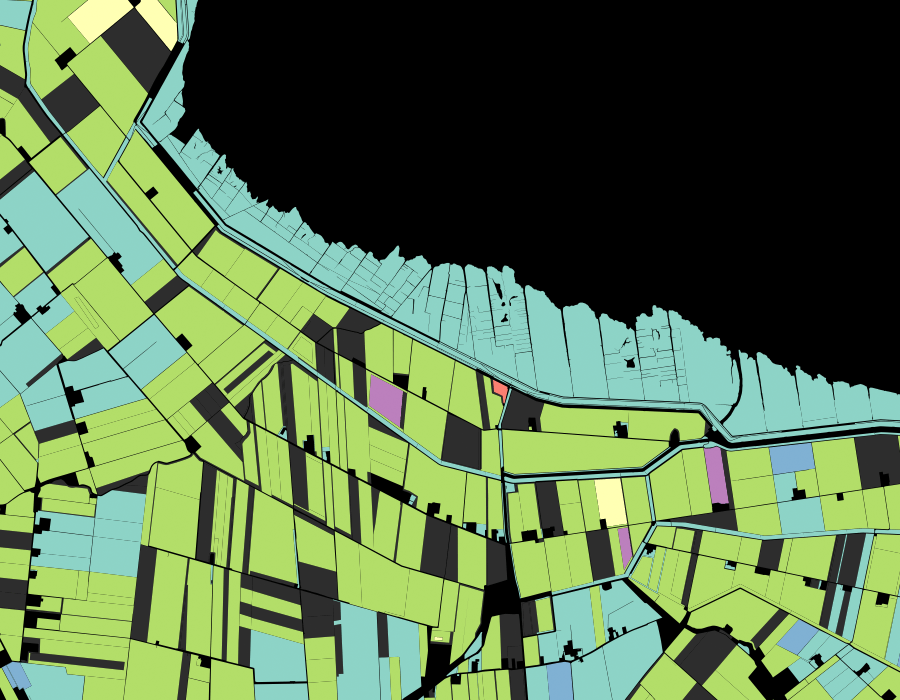
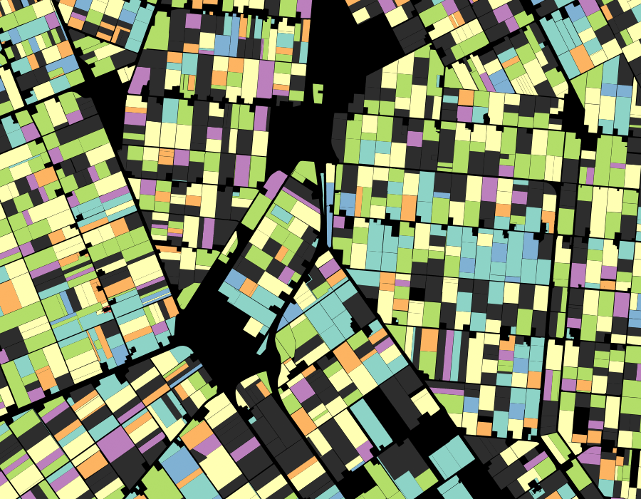

Een website met interactieve kaart vertelt aan de hand van een aantal scenes uit De Graanrepubliek van Frans Westerman (en andere bronnen) over de Nederlandse landbouwgeschiedenis en het leven en de carriere van Sicco Mansholt. Links kaart, rechts verhaal met foto's/beelden. Wanneer de lezer naar beneden scrollt, animeert de kaart mee naar het gebied passend bij het huidige deel van het verhaal.
In de kaart worden belangrijke plaatsen, gebouwen en gebieden gemarkeerd. De geografische data en de data die wordt gebruikt voor grafieken en tabellen etc. komen allemaal uit CitySDK, en zijn beschikbaar als open data.


Inspiratie:
Paar voorbeelden van percelenkaart, gekleurd naar gewas. Kleurschema nog niet definitief.
 Geboortestreek Sicco Mansholt
Geboortestreek Sicco Mansholt
 Het Oldambt
 Wieringermeerpolder